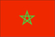
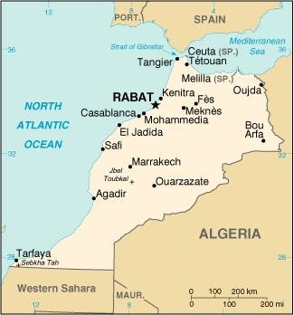

|
Morocco |  |
| Introduction Geography People Government Economy Communications Transportation Military Transnational Issues | ||
|  | ||
| Morocco | Introduction | Top of Page |
| Background: | Morocco's long struggle for independence from France ended in 1956. The internationalized city of Tangier was turned over to the new country that same year. Morocco virtually annexed Western Sahara during the late 1970s, but final resolution on the status of the territory remains unresolved. Gradual political reforms in the 1990s resulted in the establishment of a bicameral legislature in 1997. |
| Morocco | Geography | Top of Page |
| Location: | Northern Africa, bordering the North Atlantic Ocean and the Mediterranean Sea, between Algeria and Western Sahara |
| Geographic coordinates: | 32 00 N, 5 00 W |
| Map references: | Africa |
| Area: |
total:
446,550 sq km
land: 446,300 sq km water: 250 sq km |
| Area - comparative: | slightly larger than California |
| Land boundaries: |
total:
2,017.9 km
border countries: Algeria 1,559 km, Western Sahara 443 km, Spain (Ceuta) 6.3 km, Spain (Melilla) 9.6 km |
| Coastline: | 1,835 km |
| Maritime claims: |
contiguous zone:
24 NM
continental shelf: 200-m depth or to the depth of exploitation exclusive economic zone: 200 NM territorial sea: 12 NM |
| Climate: | Mediterranean, becoming more extreme in the interior |
| Terrain: | northern coast and interior are mountainous with large areas of bordering plateaus, intermontane valleys, and rich coastal plains |
| Elevation extremes: |
lowest point:
Sebkha Tah -55 m
highest point: Jbel Toubkal 4,165 m |
| Natural resources: | phosphates, iron ore, manganese, lead, zinc, fish, salt |
| Land use: |
arable land:
21%
permanent crops: 1% permanent pastures: 47% forests and woodland: 20% other: 11% (1993 est.) |
| Irrigated land: | 12,580 sq km (1993 est.) |
| Natural hazards: | northern mountains geologically unstable and subject to earthquakes; periodic droughts |
| Environment - current issues: | land degradation/desertification (soil erosion resulting from farming of marginal areas, overgrazing, destruction of vegetation); water supplies contaminated by raw sewage; siltation of reservoirs; oil pollution of coastal waters |
| Environment - international agreements: |
party to:
Biodiversity, Climate Change, Desertification, Endangered Species, Hazardous Wastes, Marine Dumping, Nuclear Test Ban, Ozone Layer Protection, Ship Pollution, Wetlands, Whaling
signed, but not ratified: Environmental Modification, Law of the Sea |
| Geography - note: | strategic location along Strait of Gibraltar |
| Morocco | People | Top of Page |
| Population: | 30,645,305 (July 2001 est.) |
| Age structure: |
0-14 years:
34.39% (male 5,368,784; female 5,170,891)
15-64 years: 60.93% (male 9,270,095; female 9,402,561) 65 years and over: 4.68% (male 646,567; female 786,407) (2001 est.) |
| Population growth rate: | 1.71% (2001 est.) |
| Birth rate: | 24.16 births/1,000 population (2001 est.) |
| Death rate: | 5.94 deaths/1,000 population (2001 est.) |
| Net migration rate: | -1.15 migrant(s)/1,000 population (2001 est.) |
| Sex ratio: |
at birth:
1.05 male(s)/female
under 15 years: 1.04 male(s)/female 15-64 years: 0.99 male(s)/female 65 years and over: 0.82 male(s)/female total population: 1 male(s)/female (2001 est.) |
| Infant mortality rate: | 48.11 deaths/1,000 live births (2001 est.) |
| Life expectancy at birth: |
total population:
69.43 years
male: 67.2 years female: 71.76 years (2001 est.) |
| Total fertility rate: | 3.05 children born/woman (2001 est.) |
| HIV/AIDS - adult prevalence rate: | 0.03% (1999 est.) |
| HIV/AIDS - people living with HIV/AIDS: | NA |
| HIV/AIDS - deaths: | NA |
| Nationality: |
noun:
Moroccan(s)
adjective: Moroccan |
| Ethnic groups: | Arab-Berber 99.1%, other 0.7%, Jewish 0.2% |
| Religions: | Muslim 98.7%, Christian 1.1%, Jewish 0.2% |
| Languages: | Arabic (official), Berber dialects, French often the language of business, government, and diplomacy |
| Literacy: |
definition:
age 15 and over can read and write
total population: 43.7% male: 56.6% female: 31% (1995 est.) |
| Morocco | Government | Top of Page |
| Country name: |
conventional long form:
Kingdom of Morocco
conventional short form: Morocco local long form: Al Mamlakah al Maghribiyah local short form: Al Maghrib |
| Government type: | constitutional monarchy |
| Capital: | Rabat |
| Administrative divisions: |
37 provinces and 2 wilayas*; Agadir, Al Hoceima, Azilal, Beni Mellal, Ben Slimane, Boulemane, Casablanca*, Chaouen, El Jadida, El Kelaa des Srarhna, Er Rachidia, Essaouira, Fes, Figuig, Guelmim, Ifrane, Kenitra, Khemisset, Khenifra, Khouribga, Laayoune, Larache, Marrakech, Meknes, Nador, Ouarzazate, Oujda, Rabat-Sale*, Safi, Settat, Sidi Kacem, Tanger, Tan-Tan, Taounate, Taroudannt, Tata, Taza, Tetouan, Tiznit
note: three additional provinces of Ad Dakhla (Oued Eddahab), Boujdour, and Es Smara as well as parts of Tan-Tan and Laayoune fall within Moroccan-claimed Western Sahara; decentralization/regionalization law passed by the legislature in March 1997 creating many new provinces/regions; specific details and scope of the reorganization not yet available |
| Independence: | 2 March 1956 (from France) |
| National holiday: | Throne Day (accession of King MOHAMED VI to the throne), 30 July (1999) |
| Constitution: | 10 March 1972, revised 4 September 1992, amended (to create bicameral legislature) September 1996 |
| Legal system: | based on Islamic law and French and Spanish civil law system; judicial review of legislative acts in Constitutional Chamber of Supreme Court |
| Suffrage: | 21 years of age; universal |
| Executive branch: |
chief of state:
King MOHAMED VI (since 23 July 1999)
head of government: Prime Minister Abderrahmane YOUSSOUFI (since 14 March 1998) cabinet: Council of Ministers appointed by the monarch elections: none; the monarch is hereditary; prime minister appointed by the monarch following legislative elections |
| Legislative branch: |
bicameral Parliament consists of an upper house or Chamber of Counselors (270 seats; members elected indirectly by local councils, professional organizations, and labor syndicates for nine-year terms; one-third of the members are renewed every three years) and a lower house or Chamber of Representatives (325 seats; members elected by popular vote for five-year terms)
elections: Chamber of Counselors - last held 15 September 2000 (next to be held NA 2002); Chamber of Representatives - last held 14 November 1997 (next to be held NA November 2002) election results: Chamber of Counselors - percent of vote by party - NA%; seats by party - NA; Chamber of Representatives - percent of vote by party - NA%; seats by party - USFP 57, UC 50, RNI 46, MP 40, MDS 32, IP 32, MNP 19, PND 10, MPCD 9, PPS 9, FFD 9, PSD 5, OADP 4, PA 2, PDI 1 note: CDT, UTM, UGTM, UNMT are all labor unions listed under Political pressure groups and leaders; see explanation in the description of Parliament |
| Judicial branch: | Supreme Court (judges are appointed on the recommendation of the Supreme Council of the Judiciary, presided over by the monarch) |
| Political parties and leaders: | Action Party or PA [Muhammad IDRISS]; Constitutional Union or UC [leader NA]; Democratic Forces Front or FFD [Thami KHIARI]; Democratic Socialist Party or PSD [Issa OUARDIGHI]; Democratic Party for Independence or PDI [Thami EL-OUAZZANI, Said BOUACHRINE]; Istiqlal Party or IP [Abbas El-FASSI]; Labor Party or UT [leader NA]; National Democratic Party or PND [Mohamed Arsalane EL-JADIDI]; National Popular Movement or MNP [Mahjoubi AHERDANE]; National Rally of Independents or RNI [Ahmed OSMAN]; Organization of Democratic and Popular Action or OADP [Mohamed BEN SAID ait Idder]; Party of Progress and Socialism or PPS [Moulay Ismail ALAOUI]; Popular Constitutional and Democratic Movement or MPCD (has become Party of Justice and Development or PJD) [Dr. Abdelkarim KHATIB]; Popular Movement or MP [Mohamed LAENSER]; Social Democratic Movement or MDS [Mahmoud ARCHANE]; Socialist Union of Popular Forces or USFP [Abd ar-Rahman EL-YOUSSOUFI] |
| Political pressure groups and leaders: | Association of Popular Trade Unions or ADP [leader NA]; Democratic Confederation of Labor or CDT [Noubir AMAOUI]; Democratic National Trade Union or USND [leader NA]; Democratic Trade Union or SD [leader NA]; General Union of Moroccan Workers or UGTM [Abderrazzak AFILAL]; Labor Union Commissions or CS [leader NA]; Moroccan National Workers Union or UNMT [leader NA]; Moroccan Union of Workers or UTM [Mahjoub BENSEDIQ]; Party of Shura and Istiqla [Abdelwaheb MAASH] |
| International organization participation: | ABEDA, ACCT (associate), AfDB, AFESD, AL, AMF, AMU, CCC, EBRD, ECA, FAO, G-77, IAEA, IBRD, ICAO, ICC, ICFTU, ICRM, IDA, IDB, IFAD, IFC, IFRCS, IHO, ILO, IMF, IMO, Intelsat, Interpol, IOC, IOM, ISO, ITU, MONUC, NAM, OAS (observer), OIC, OPCW, OSCE (partner), UN, UNCTAD, UNESCO, UNHCR, UNIDO, UPU, WCL, WHO, WIPO, WMO, WToO, WTrO |
| Diplomatic representation in the US: |
chief of mission:
Ambassador Abdullah MAAROUFI
chancery: 1601 21st Street NW, Washington, DC 20009 telephone: [1] (202) 462-7979 through 7982 FAX: [1] (202) 265-0161 consulate(s) general: New York |
| Diplomatic representation from the US: |
chief of mission:
Ambassador Edward M. GABRIEL
embassy: 2 Avenue de Mohamed El Fassi, Rabat mailing address: PSC 74, Box 3, APO AE 90718 telephone: [212] (37) 76 22 65 FAX: [212] (37) 76 56 61 consulate(s) general: Casablanca |
| Flag description: | red with a green pentacle (five-pointed, linear star) known as Solomon's seal in the center of the flag; green is the traditional color of Islam |
| Morocco | Economy | Top of Page |
| Economy - overview: | Morocco faces the problems typical of developing countries - restraining government spending, reducing constraints on private activity and foreign trade, and achieving sustainable economic growth. Following structural adjustment programs supported by the IMF, World Bank, and the Paris Club, the dirham is now fully convertible for current account transactions, and reforms of the financial sector have been implemented. Drought conditions depressed activity in the key agricultural sector and contributed to a stagnant economy in 1999 and 2000. During that time, however, Morocco reported large foreign exchange inflows from the sale of a mobile telephone license and partial privatization of the state-owned telecommunications company. Favorable rainfalls have led Morocco to predict a growth of 1% for 2001. Formidable long-term challenges include: servicing the external debt; preparing the economy for freer trade with the EU; and improving education and attracting foreign investment to boost living standards and job prospects for Morocco's youthful population. |
| GDP: | purchasing power parity - $105 billion (2000 est.) |
| GDP - real growth rate: | 0.8% (2000 est.) |
| GDP - per capita: | purchasing power parity - $3,500 (2000 est.) |
| GDP - composition by sector: |
agriculture:
15%
industry: 33% services: 52% (1999 est.) |
| Population below poverty line: | 19% (1999 est.) |
| Household income or consumption by percentage share: |
lowest 10%:
2.6%
highest 10%: 30.9% (1998-99) |
| Inflation rate (consumer prices): | 2% (2000 est.) |
| Labor force: | 11 million (1997 est.) |
| Labor force - by occupation: | agriculture 50%, services 35%, industry 15% (1999 est.) |
| Unemployment rate: | 23% (1999 est.) |
| Budget: |
revenues:
$9.6 billion
expenditures: $8.6 billion, including capital expenditures of $2.1 billion (2001 est.) |
| Industries: | phosphate rock mining and processing, food processing, leather goods, textiles, construction, tourism |
| Industrial production growth rate: | 0.5% (1999 est.) |
| Electricity - production: | 13.695 billion kWh (1999) |
| Electricity - production by source: |
fossil fuel:
89.19%
hydro: 10.81% nuclear: 0% other: 0% (1999) |
| Electricity - consumption: | 13.441 billion kWh (1999) |
| Electricity - exports: | 0 kWh (1999) |
| Electricity - imports: | 705 million kWh (1999) |
| Agriculture - products: | barley, wheat, citrus, wine, vegetables, olives; livestock |
| Exports: | $7.6 billion (f.o.b., 2000 est.) |
| Exports - commodities: | phosphates and fertilizers, food and beverages, minerals |
| Exports - partners: | France 35%, Spain 9%, UK 8%, Germany 7%, US 5% (1999) |
| Imports: | $12.2 billion (f.o.b., 1999 est.) |
| Imports - commodities: | semiprocessed goods, machinery and equipment, food and beverages, consumer goods, fuel |
| Imports - partners: | France 32%, Spain 12%, Italy 7%, Germany 6%, UK 6% (1999) |
| Debt - external: | $18.4 billion (2000 est.) |
| Economic aid - recipient: | $565.6 million (1995) |
| Currency: | Moroccan dirham (MAD) |
| Currency code: | MAD |
| Exchange rates: | Moroccan dirhams per US dollar - 10.590 (January 2001), 10.626 (2000), 9.804 (1999), 9.604 (1998), 9.527 (1997), 8.716 (1996) |
| Fiscal year: | calendar year |
| Morocco | Communications | Top of Page |
| Telephones - main lines in use: | 1.391 million (1998) |
| Telephones - mobile cellular: | 116,645 (1998) |
| Telephone system: |
general assessment:
modern system with all important capabilities; however density is low with only 4.6 main lines available for each 100 persons
domestic: good system composed of open-wire lines, cables, and microwave radio relay links; Internet available but expensive; principal switching centers are Casablanca and Rabat; national network nearly 100% digital using fiber-optic links; improved rural service employs microwave radio relay international: 7 submarine cables; satellite earth stations - 2 Intelsat (Atlantic Ocean) and 1 Arabsat; microwave radio relay to Gibraltar, Spain, and Western Sahara; coaxial cable and microwave radio relay to Algeria; participant in Medarabtel; fiber-optic cable link from Agadir to Algeria and Tunisia (1998) |
| Radio broadcast stations: | AM 27, FM 25, shortwave 6 (1998) |
| Radios: | 6.64 million (1997) |
| Television broadcast stations: | 35 (plus 66 repeaters) (1995) |
| Televisions: | 3.1 million (1997) |
| Internet country code: | .ma |
| Internet Service Providers (ISPs): | 8 (2000) |
| Internet users: | 120,000 (1999) |
| Morocco | Transportation | Top of Page |
| Railways: |
total:
1,907 km
standard gauge: 1,907 km 1.435-m gauge (1,003 km electrified; 540 km double track) |
| Highways: |
total:
57,847 km
paved: 30,254 km (including 327 km of expressways) unpaved: 27,593 km (1998) |
| Waterways: | none |
| Pipelines: | crude oil 362 km; petroleum products 491 km (abandoned); natural gas 241 km |
| Ports and harbors: | Agadir, El Jadida, Casablanca, El Jorf Lasfar, Kenitra, Mohammedia, Nador, Rabat, Safi, Tangier; also Spanish-controlled Ceuta and Melilla |
| Merchant marine: |
total:
41 ships (1,000 GRT or over) totaling 223,052 GRT/272,786 DWT
ships by type: cargo 9, chemical tanker 6, container 5, petroleum tanker 3, refrigerated cargo 9, roll on/roll off 8, short-sea passenger 1 (2000 est.) |
| Airports: | 69 (2000 est.) |
| Airports - with paved runways: |
total:
26
over 3,047 m: 10 2,438 to 3,047 m: 5 1,524 to 2,437 m: 9 914 to 1,523 m: 1 under 914 m: 1 (2000 est.) |
| Airports - with unpaved runways: |
total:
43
2,438 to 3,047 m: 1 1,524 to 2,437 m: 11 914 to 1,523 m: 20 under 914 m: 11 (2000 est.) |
| Heliports: | 1 (2000 est.) |
| Morocco | Military | Top of Page |
| Military branches: | Royal Armed Forces (includes Army, Navy, Air Force), Gendarmerie, Auxiliary Forces |
| Military manpower - military age: | 18 years of age |
| Military manpower - availability: | males age 15-49: 8,182,073 (2001 est.) |
| Military manpower - fit for military service: | males age 15-49: 5,160,374 (2001 est.) |
| Military manpower - reaching military age annually: | males: 348,380 (2001 est.) |
| Military expenditures - dollar figure: | $1.4 billion (FY99/00) |
| Military expenditures - percent of GDP: | 4% (FY99/00) |
| Morocco | Transnational Issues | Top of Page |
| Disputes - international: | claims and administers Western Sahara, but sovereignty is unresolved and the UN is attempting to hold a referendum on the issue; the UN-administered cease-fire has been in effect since September 1991; Spain controls five places of sovereignty (plazas de soberania) on and off the coast of Morocco - the coastal enclaves of Ceuta and Melilla which Morocco contests, as well as the islands of Penon de Alhucemas, Penon de Velez de la Gomera, and Islas Chafarinas |
| Illicit drugs: | illicit producer of hashish; trafficking on the increase for both domestic and international drug markets; shipments of hashish mostly directed to Western Europe; transit point for cocaine from South America destined for Western Europe |
{kind=link}
{kind=link}